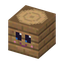
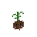
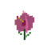
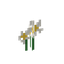
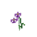
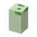

What spawns hereWat spawnt hier
| MobWezen | GroupGroep | WeightGewicht | Group sizeGroepsgrootte |
|---|---|---|---|
| Guh | animaldier | 80 | 2–4 |
| Guhvis | water critterwaterdiertje | 25 | 3–6 |
| Zeemeeuwtje | extra spawn | 12 | 2–4 |
| Knabbelvlindertje | extra spawn | 12 | 1–3 |
StructuresBouwwerken
Guhwai'i
A tropical island (about 250 blocks across) in a warm turquoise lagoon, towards the Diepe Guhzee. It has guh palms with a face in the trunk (click it: it winks, Njeg!) and coconuts under the fronds, roze hibiscus, plumeria, paradijsvogelbloemen and orchids, a shallow kaaskoraal reef with guhvisjes to snorkel over (you can breathe near the coral trees), and Schilly eggs in the sand that hatch into baby Poepschilly's and Schilly's. Zeemeeuwtjes circle above the beach.
Een tropisch eiland (zo'n 250 blokken breed) in een warme turquoise lagune, richting de Diepe Guhzee. Er groeien guh-palmen met een gezichtje in de stam (klik erop: hij knipoogt, Njeg!) en kokosnoten onder de bladeren, roze hibiscus, plumeria, paradijsvogelbloemen en orchideeën, er is een ondiep kaaskoraalrif met guhvisjes om boven te snorkelen (bij de koraalboompjes kun je ademen), en er liggen Schilly-eitjes in het zand die uitkomen in baby-Poepschilly's en -Schilly's. Boven het strand cirkelen zeemeeuwtjes.
- Kokosnoot: pick a ripe one (or wait until it falls). Eat it (krak, slurp!), give it to your guh (guhs love coconut), plant it on sand or grass (it grows into a guh palm) or hang it under a frond.Kokosnoot: pluk een rijpe (of wacht tot hij valt). Eet hem op (krak, slurp!), geef hem aan je guh (guhs zijn dol op kokos), plant hem in zand of gras (er groeit een guh-palm uit) of hang hem onder een blad.
- Kokosmelk: a coconut and a glass bottle. Cool and sweet, gives Regeneration, and you get the bottle back.Kokosmelk: een kokosnoot en een glazen flesje. Koel en zoet, geeft Regeneratie, en je krijgt het flesje terug.
- The four tropical flowers make dye and fit in a flower pot.De vier tropische bloemen geven kleurstof en passen in een bloempot.






At a glanceIn het kort
- AdvancementsVooruitgangen
- Aloha, Lilo-guh! · Een vallende ster? · ONBEREKENBAAR VAHOEG · Uit het asiel · Alleen maar rommel · Lief zijn is best vahoeg · Ohana betekent familie · Experiment 626, thuis! ★ · Aloha, njeg! · Tokkel tokkel · Eilandkleertjes · Aan de muur! · Krak, slurp! · Kokosmelk! · Een eigen palmpje · Knipoog! · Een bloem achter je oor · Knak, knak! · Snorkelen